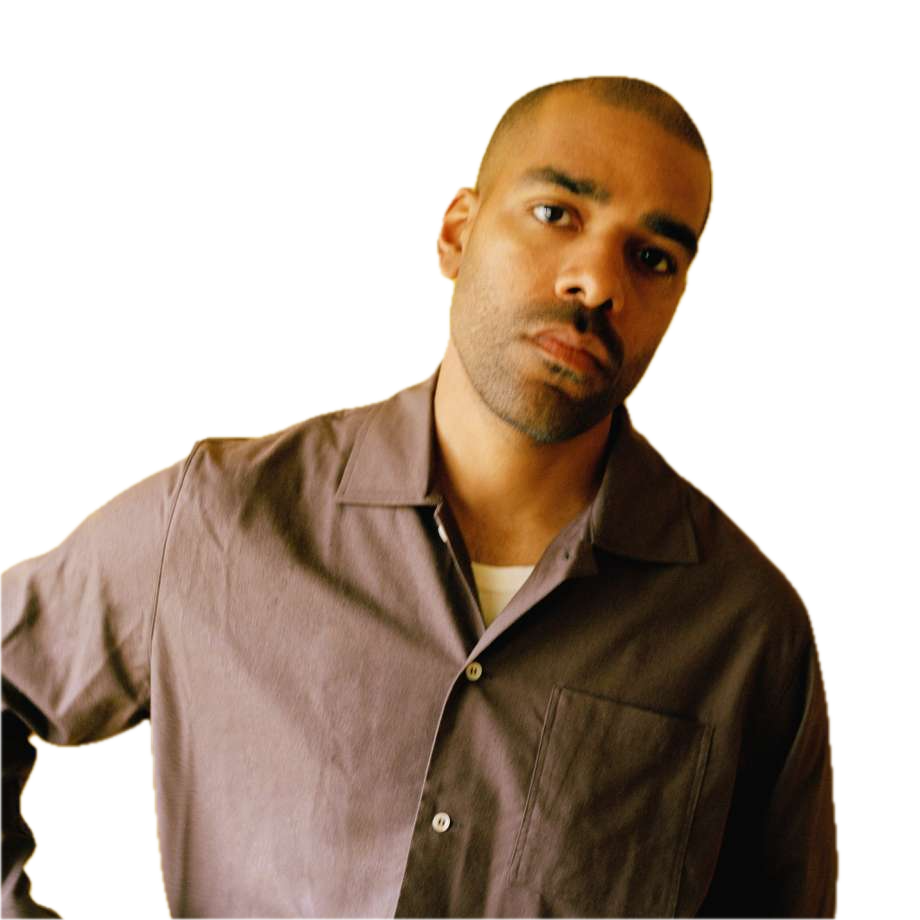

HANS PHILIP
Hans Philip er en af de mest mærkante stemmer i nyere dansk pop. Med sine ærlige tekster og melodiske universer, har han skabt sange som “Dagdrøm [1]” og “Blå Himmel”. Han debuterede i 2015 og har opbygget et solidt musikkartotek.